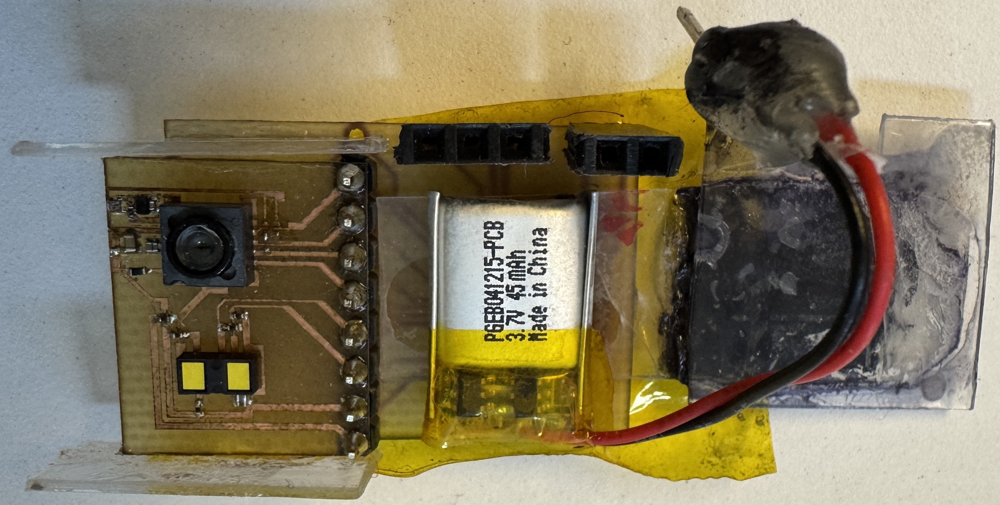
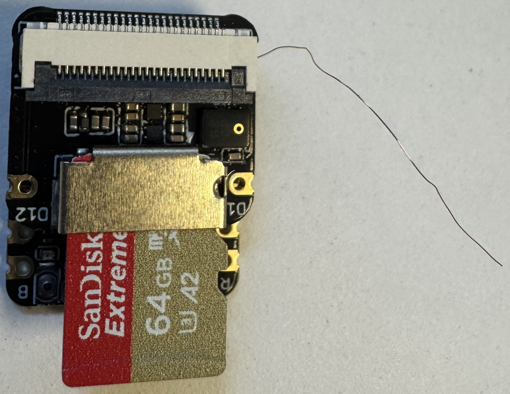

Abstract
Wearables are generally small and wireless so they don't get in the way of daily tasks. Some wearables like Meta's Ray Bans and Google's Fitbit will run models on device. My project consists of two parts: (1) improving the form factor of a wearable for sports use and (2) writing a classification model for basketball dribbling and shots. To do this, I sent bluetooth data from the wearable to a small microcontroller, eliminating the need for a bulky phone or computer to be present while wearing the device. Then I collected data while wearing the device and trained a small CNN model.
Hardware
Current Device
The wearable I am using to collect data was built by members of the UW Air Lab. It contains the following sensors:
| Sensor | Type of Data |
|---|---|
| Accelerometer | Acceleration |
| Gyroscope | Angular Velocity |
| Optic Flow Camera | Optical Flow |
| Time of Flight | Distance |
It uses a 3.7V 45 mAh LiPo battery for power and can send data wirelessly over Bluetooth. We previously ran a Python script on a computer to collect data. However, it is not feasible for basketball players to constantly be near a computer.

Improvements
To fix this issue, I decided to send the data from the wearable device to a small microcontroller instead of a computer. The microcontroller I used was the Seeed Studio XIAO ESP32-S3. I attached a 64 GB SD card to the microcontroller to store the data. This supports storing 23 hours of device data. The microcontroller's dimensions are 21 x 17.8 x 15mm, which means it is small enough to be attached to the wearable or fit in a pocket. One issue I ran into was the microcontroller was not able to receive data from the device unless it was a few centimeters apart. After reading through the documentation, I realized I needed to attach an antenna to the Seeed Studio board, hence the soldered on wire seen in the image below.

Software
Discuss the software ecosystem powering the project. Break this down into the firmware running on the hardware (C/C++), communication protocols (BLE, I2C, SPI), and any data processing or visualization scripts running on the computer.
Demo
Here is the system in action. The demonstration below highlights the core functionality of the completed build.
Future Work
Outline the next steps for this project. Discuss known limitations in the current design and how future iterations could address them to improve accuracy, efficiency, or form factor.